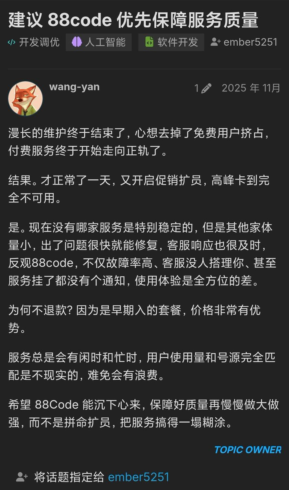
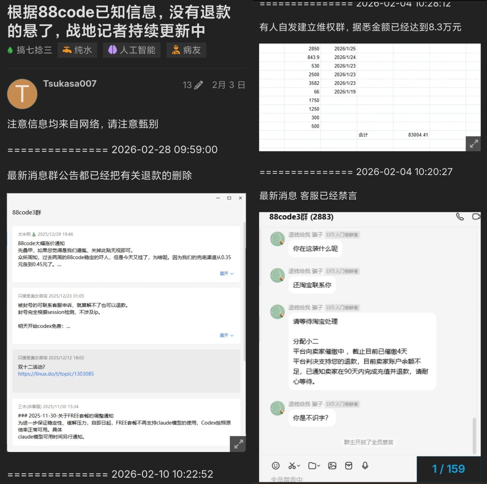
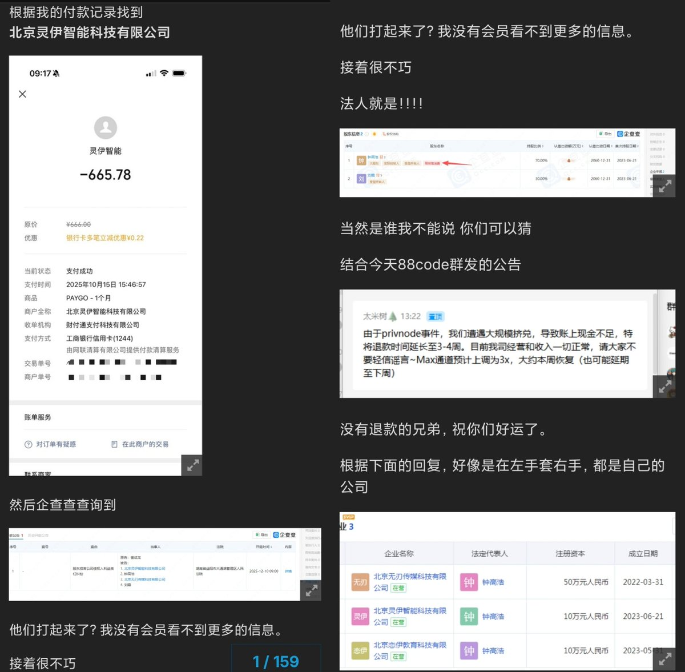
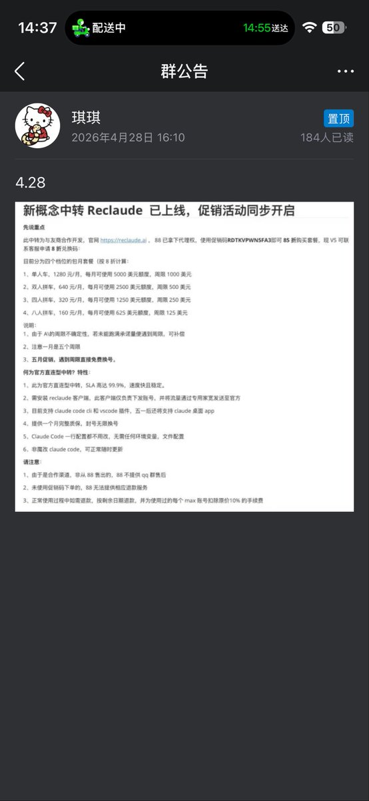

88code以前也是L站的富可敌国之一，后面因为N佬（另一位富可敌国）的PrivNode以10元出售66万债务影响，一直都没退款
主体是北京灵伊智能科技有限公司，本质上是AI中转站，去年年底就有多名佬友反应高峰不可用、故障率高等问题，特别是挂了没有通知
借雪踏乌云佬的帖提一嘴，采买第三方API服务应当多留意一下，避开这类有前科的AI中转站以免造成不必要的经济损失
主体是北京灵伊智能科技有限公司，本质上是AI中转站，去年年底就有多名佬友反应高峰不可用、故障率高等问题，特别是挂了没有通知
借雪踏乌云佬的帖提一嘴，采买第三方API服务应当多留意一下，避开这类有前科的AI中转站以免造成不必要的经济损失



